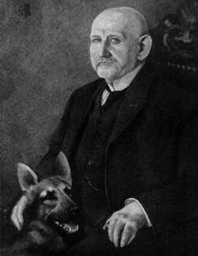
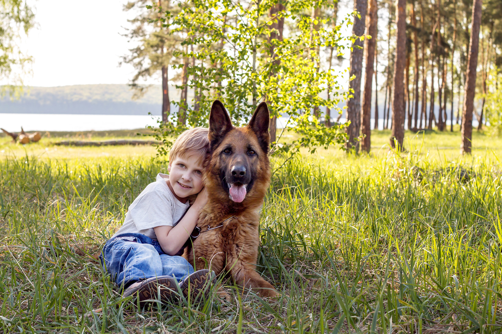
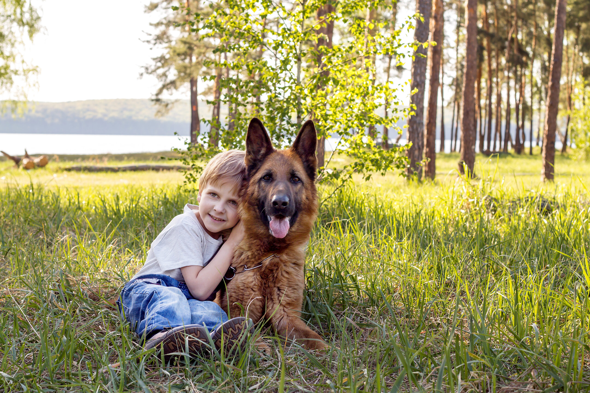

Origin
In the late 19th century, sheepdogs in Germany were on the decline due to industrialization. During this period, a man named Max Emil Friedrich von Stephanitz, a former cavalry officer who served at the Veterinary College in Berlin, enjoyed attending dog shows. At these dog shows, he noted the lack of uniformity of the German sheepdog breed.
While attending one particular dog show, Stephanitz encountered a dog that he felt best represented what a German working dog should be in appearance, intelligence, temperament, and abilities. Stephanitz purchased that dog and used it to breed a new standardized line that he called the German Shepherd.
Modern Uses of German Sheperds
German Shepherds in the modern day are valued as both a police dog and a family pet. The German Shepherd's intelligence and stamina make it a popular choice amongst police departments when looking for a canine officer. Families also appreciate their intelligence alongside their loyalty.
 
